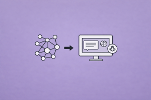

graph LR
subgraph VOR["Vector-Only RAG"]
A["Query"] --> B["Encode"]
B --> C["Top-k ANN Search"]
C --> D["Flat Chunk List"]
D --> E["LLM"]
end
subgraph GRAG["GraphRAG"]
F["Query"] --> G["Entity<br/>Recognition"]
G --> H["Graph<br/>Traversal"]
H --> I["Structured<br/>Context"]
F --> J["Vector<br/>Search"]
J --> I
I --> K["LLM"]
end
VOR ~~~ GRAG
style A fill:#4a90d9,color:#fff,stroke:#333
style B fill:#9b59b6,color:#fff,stroke:#333
style C fill:#e67e22,color:#fff,stroke:#333
style D fill:#e74c3c,color:#fff,stroke:#333
style E fill:#C8CFEA,color:#fff,stroke:#333
style F fill:#4a90d9,color:#fff,stroke:#333
style G fill:#27ae60,color:#fff,stroke:#333
style H fill:#27ae60,color:#fff,stroke:#333
style I fill:#f5a623,color:#fff,stroke:#333
style J fill:#9b59b6,color:#fff,stroke:#333
style K fill:#C8CFEA,color:#fff,stroke:#333
style VOR fill:#F2F2F2,stroke:#D9D9D9
style GRAG fill:#F2F2F2,stroke:#D9D9D9
GraphRAG: Knowledge Graphs Meet Retrieval-Augmented Generation
Building and querying knowledge graphs for RAG with Neo4j, LlamaIndex, and Microsoft GraphRAG — from entity extraction to community summarization
Keywords
GraphRAG, knowledge graph, RAG, Neo4j, LlamaIndex, LangChain, entity extraction, community summarization, Leiden algorithm, property graph, Cypher, graph retrieval, Microsoft GraphRAG, DRIFT search, hybrid search

Introduction
Standard RAG works by embedding document chunks into vectors and retrieving the most similar ones at query time. This handles specific, fact-seeking questions well — “What is the maximum batch size for model X?” — but fails on global, analytical questions that require reasoning across many documents: “What are the main themes in this corpus?” or “How do the microservices in this system depend on each other?”
The core limitation is structural. Vector search finds similar text, not connected concepts. It cannot aggregate, traverse relationships, or reason over the shape of your data. When the answer lives in the connections between entities rather than inside any single chunk, vector-only RAG falls short.
GraphRAG addresses this by introducing a knowledge graph as the retrieval backbone. Instead of treating documents as isolated chunks, GraphRAG extracts entities and relationships, organizes them into a graph, and retrieves information by traversing that graph — combining structured reasoning with semantic search.
This article covers the full landscape: why vector-only RAG breaks, how knowledge graphs work, Microsoft’s GraphRAG architecture with community summarization, LlamaIndex’s PropertyGraphIndex, Neo4j with LangChain’s GraphCypherQAChain, and practical guidance on when each approach fits.
Why Vector-Only RAG Fails
The Global Question Problem
Consider a corpus of 1,000 research papers. A user asks: “What are the top five research themes across these papers?”
Vector search will retrieve the 5–10 chunks most similar to the query embedding. But the answer requires synthesizing information across all 1,000 documents — no single chunk contains it. This is query-focused summarization (QFS), not information retrieval, and it’s fundamentally incompatible with top-k similarity search.
Microsoft’s GraphRAG paper (Edge et al., 2024) demonstrated that baseline RAG showed substantial degradation on global sensemaking questions over datasets exceeding 1 million tokens, while GraphRAG maintained comprehensiveness and diversity.
Structural Limitations of Flat Retrieval
| Limitation | Example Question | Why Vector Search Fails |
|---|---|---|
| Aggregation | “How many open tickets are assigned to Team A?” | Cannot count or group — returns k nearest chunks regardless |
| Multi-hop reasoning | “Which services will break if Database goes down?” | Requires traversing dependency chains across entities |
| Global summarization | “What are the main themes in this dataset?” | Answer spans the entire corpus, not any single chunk |
| Relationship queries | “Who collaborated with Author X on topic Y?” | Relationships aren’t encoded in flat embeddings |
| Explainability | “Why did you retrieve this context?” | Vector similarity is opaque — no traceable reasoning path |
From Chunks to Graphs
The shift from vector-only to graph-augmented retrieval means moving from:
Knowledge Graph Fundamentals
What Is a Knowledge Graph?
A knowledge graph represents information as a network of entities (nodes) and relationships (edges), where each relationship carries a type and optional properties. The atomic unit is a triple: (subject, predicate, object).
(Neo4j, IS_A, Graph Database)
(GraphRAG, USES, Knowledge Graph)
(Microsoft, PUBLISHED, GraphRAG Paper)
(GraphRAG Paper, AUTHORED_BY, Darren Edge)Graph vs. Vector Representations
| Aspect | Vector Store | Knowledge Graph |
|---|---|---|
| Data model | Flat vectors with metadata | Nodes, edges, properties |
| Query paradigm | Similarity (cosine, dot product) | Pattern matching (Cypher, SPARQL) |
| Relationships | Implicit in embedding space | Explicit, typed, traversable |
| Aggregation | Not supported natively | Native (COUNT, GROUP BY, path length) |
| Explainability | Low — “these vectors are close” | High — “followed this path” |
| Scalability | Billions of vectors with ANN | Billions of edges with graph engines |
| Best for | Semantic similarity, fuzzy matching | Structured reasoning, multi-hop queries |
Knowledge Graph Construction from Text
The key challenge is extracting structured triples from unstructured text. Modern approaches use LLMs as extractors:
graph TD
A["Raw Document"] --> B["Chunking"]
B --> C["LLM Entity/Relation<br/>Extraction"]
C --> D["(Entity A, REL, Entity B)<br/>Triples"]
D --> E["Entity Resolution<br/>& Deduplication"]
E --> F["Knowledge Graph"]
F --> G["Graph Database<br/>(Neo4j, etc.)"]
style A fill:#4a90d9,color:#fff,stroke:#333
style B fill:#f5a623,color:#fff,stroke:#333
style C fill:#9b59b6,color:#fff,stroke:#333
style D fill:#e67e22,color:#fff,stroke:#333
style E fill:#e74c3c,color:#fff,stroke:#333
style F fill:#27ae60,color:#fff,stroke:#333
style G fill:#C8CFEA,color:#fff,stroke:#333
Microsoft GraphRAG: From Local to Global
Microsoft’s GraphRAG (Edge et al., 2024) introduced a fundamentally different architecture: instead of retrieving chunks, it pre-builds a hierarchical community structure over a knowledge graph and uses community summaries to answer global questions.
Architecture Overview
The system operates in two phases: indexing and querying.
graph TD
subgraph IP["Indexing Phase"]
A["Source Documents"] --> B["Split into<br/>TextUnits"]
B --> C["LLM extracts<br/>Entities & Relations"]
C --> D["Build Entity<br/>Knowledge Graph"]
D --> E["Leiden Hierarchical<br/>Clustering"]
E --> F["Generate Community<br/>Summaries"]
end
subgraph QP["Query Phase"]
G["User Query"] --> H{Query Type}
H -->|Global| I["Map: Each Community<br/>Summary → Partial Answer"]
I --> J["Reduce: Combine<br/>Partial Answers"]
H -->|Local| K["Find Relevant Entities<br/>→ Traverse Neighbors"]
H -->|DRIFT| L["Entity Search +<br/>Community Context"]
J --> M["Final Response"]
K --> M
L --> M
end
IP ~~~ QP
style A fill:#4a90d9,color:#fff,stroke:#333
style B fill:#f5a623,color:#fff,stroke:#333
style C fill:#9b59b6,color:#fff,stroke:#333
style D fill:#27ae60,color:#fff,stroke:#333
style E fill:#e67e22,color:#fff,stroke:#333
style F fill:#1abc9c,color:#fff,stroke:#333
style G fill:#4a90d9,color:#fff,stroke:#333
style H fill:#f5a623,color:#fff,stroke:#333
style I fill:#9b59b6,color:#fff,stroke:#333
style J fill:#9b59b6,color:#fff,stroke:#333
style K fill:#27ae60,color:#fff,stroke:#333
style IP fill:#F2F2F2,stroke:#D9D9D9
style QP fill:#F2F2F2,stroke:#D9D9D9
style L fill:#e67e22,color:#fff,stroke:#333
style M fill:#C8CFEA,color:#fff,stroke:#333
Step 1: TextUnit Extraction
Source documents are split into TextUnits — chunks of text that serve as the atomic unit for entity extraction. Each TextUnit maintains a reference back to its source document for traceability.
Step 2: Entity and Relationship Extraction
An LLM processes each TextUnit and extracts:
- Entities: named things with a type (Person, Organization, Technology, etc.)
- Relationships: typed connections between entities (USES, AUTHORED_BY, DEPENDS_ON, etc.)
- Claims: factual assertions associated with entities
# Conceptual extraction prompt (simplified)
EXTRACTION_PROMPT = """
Given the following text, extract all entities and relationships.
For each entity, provide:
- name: The entity name
- type: The entity type (Person, Organization, Technology, Concept, etc.)
- description: A brief description
For each relationship, provide:
- source: The source entity name
- target: The target entity name
- type: The relationship type
- description: A brief description
Text: {text}
"""Step 3: Leiden Hierarchical Clustering
Once the knowledge graph is built, GraphRAG applies the Leiden algorithm — a community detection method that identifies groups of densely connected entities. Crucially, it produces a hierarchy: coarse-grained communities at the top, fine-grained ones at the bottom.
Level 0: Entire graph (1 community)
Level 1: 5 broad theme communities
Level 2: 25 sub-topic communities
Level 3: 100+ fine-grained entity clustersEach community represents a cluster of closely related entities and their relationships. This hierarchy is the key innovation — it enables answering questions at different levels of granularity.
Step 4: Community Summary Generation
For each community at each level, an LLM generates a summary capturing the key entities, relationships, and themes in that community. These summaries are generated bottom-up: leaf-level communities are summarized first, then their summaries feed into higher-level community summaries.
Query Modes
Microsoft GraphRAG supports four query modes:
| Mode | Best For | Mechanism |
|---|---|---|
| Global Search | Holistic, thematic questions | Map-reduce over community summaries at chosen level |
| Local Search | Specific entity questions | Find entity → traverse neighbors → return subgraph context |
| DRIFT Search | Hybrid specificity | Entity matching + community context expansion |
| Basic Search | Standard similarity lookup | Traditional vector top-k over TextUnits |
Global Search is the signature mode. It works as a map-reduce:
- Map: Each community summary at the selected hierarchy level independently generates a partial answer to the query
- Reduce: All partial answers are combined into a final, comprehensive response
This enables answering questions like “What are the main themes?” without retrieving every chunk — because the themes are already encoded in the community summaries.
Using Microsoft GraphRAG
# Install
pip install graphrag
# Initialize a project
graphrag init --root ./my_project
# Place source documents in ./my_project/input/
# Run prompt tuning (strongly recommended)
graphrag prompt-tune --root ./my_project
# Build the index
graphrag index --root ./my_project
# Query - Global Search
graphrag query --root ./my_project \
--method global \
--query "What are the main themes in this dataset?"
# Query - Local Search
graphrag query --root ./my_project \
--method local \
--query "Tell me about Entity X and its relationships"
# Query - DRIFT Search
graphrag query --root ./my_project \
--method drift \
--query "How does Entity X relate to Theme Y?"Key practical notes:
- Prompt tuning is strongly recommended — it adapts extraction prompts to your specific domain, significantly improving entity and relationship quality
- Indexing is LLM-intensive — expect significant API costs for large corpora, as every TextUnit goes through entity extraction
- Re-run
graphrag initbetween version bumps to pick up configuration changes
LlamaIndex PropertyGraphIndex
LlamaIndex provides a PropertyGraphIndex that extracts a knowledge graph directly from documents and supports both graph traversal and vector retrieval.
Construction
from llama_index.core import SimpleDirectoryReader, PropertyGraphIndex
from llama_index.embeddings.openai import OpenAIEmbedding
from llama_index.llms.openai import OpenAI
# Load documents
documents = SimpleDirectoryReader("./data/").load_data()
# Build the property graph index
# This will:
# 1. Parse documents into nodes
# 2. Extract entities and relationships via LLM
# 3. Generate embeddings for graph nodes
index = PropertyGraphIndex.from_documents(
documents,
llm=OpenAI(model="gpt-4o-mini", temperature=0.0),
embed_model=OpenAIEmbedding(model_name="text-embedding-3-small"),
show_progress=True,
)Under the hood, from_documents() runs four stages:
- Parsing nodes — splits documents into chunks
- Extracting paths from text — LLM generates knowledge graph triples (entity → relationship → entity)
- Extracting implicit paths — infers relationships from document structure (e.g., parent-child node relationships)
- Generating embeddings — embeds both text nodes and graph entity nodes
Customizing Extraction
For finer control, use explicit kg_extractors:
from llama_index.core.indices.property_graph import (
ImplicitPathExtractor,
SimpleLLMPathExtractor,
)
index = PropertyGraphIndex.from_documents(
documents,
embed_model=OpenAIEmbedding(model_name="text-embedding-3-small"),
kg_extractors=[
ImplicitPathExtractor(),
SimpleLLMPathExtractor(
llm=OpenAI(model="gpt-4o-mini", temperature=0.0),
num_workers=4,
max_paths_per_chunk=10,
),
],
show_progress=True,
)Querying the Graph
Retrieval combines synonym/keyword expansion (LLM generates related terms) and vector retrieval (embedding similarity on graph nodes). Once nodes are found, adjacent paths (triples) and optionally the original source text are returned.
# Retrieve triples only (no source text)
retriever = index.as_retriever(include_text=False)
nodes = retriever.retrieve("What happened at Interleaf and Viaweb?")
for node in nodes:
print(node.text)
# Output: entity-relationship triples like
# Interleaf -> Built -> Impressive technology
# Interleaf -> Got crushed by -> Moore's law
# Paul Graham -> Started -> Viaweb# Full query engine with source text
query_engine = index.as_query_engine(include_text=True)
response = query_engine.query("What happened at Interleaf and Viaweb?")
print(str(response))Storage with Neo4j
LlamaIndex integrates with Neo4j as a graph store backend:
from llama_index.graph_stores.neo4j import Neo4jPropertyGraphStore
graph_store = Neo4jPropertyGraphStore(
username="neo4j",
password="your-password",
url="bolt://localhost:7687",
)
index = PropertyGraphIndex.from_documents(
documents,
llm=OpenAI(model="gpt-4o-mini", temperature=0.0),
embed_model=OpenAIEmbedding(model_name="text-embedding-3-small"),
property_graph_store=graph_store,
show_progress=True,
)You can also use a separate vector store alongside the graph store:
from llama_index.vector_stores.chroma import ChromaVectorStore
import chromadb
client = chromadb.PersistentClient("./chroma_db")
collection = client.get_or_create_collection("my_graph_vector_db")
index = PropertyGraphIndex.from_documents(
documents,
embed_model=OpenAIEmbedding(model_name="text-embedding-3-small"),
property_graph_store=graph_store,
vector_store=ChromaVectorStore(collection=collection),
show_progress=True,
)Neo4j + LangChain: GraphCypherQAChain
LangChain provides a direct integration with Neo4j through GraphCypherQAChain, which translates natural language questions into Cypher queries — the structured query language for graph databases.
Setup
from langchain_neo4j import Neo4jGraph
graph = Neo4jGraph(
url="neo4j+s://your-instance.databases.neo4j.io",
username="neo4j",
password="your-password",
)Vector Index on Graph Nodes
Neo4j supports native vector search on graph nodes. You can embed node properties and search by similarity:
from langchain_neo4j import Neo4jVector
from langchain_openai import OpenAIEmbeddings, ChatOpenAI
# Create vector index from existing graph nodes
vector_index = Neo4jVector.from_existing_graph(
OpenAIEmbeddings(),
url="neo4j+s://your-instance.databases.neo4j.io",
username="neo4j",
password="your-password",
index_name="tasks",
node_label="Task",
text_node_properties=["name", "description", "status"],
embedding_node_property="embedding",
)
# Similarity search
response = vector_index.similarity_search(
"How will RecommendationService be updated?"
)
print(response[0].page_content)Cypher Query Generation
The real power comes from GraphCypherQAChain, which lets an LLM generate and execute Cypher queries against the graph:
from langchain.chains import GraphCypherQAChain
graph.refresh_schema()
cypher_chain = GraphCypherQAChain.from_llm(
cypher_llm=ChatOpenAI(temperature=0, model_name="gpt-4o"),
qa_llm=ChatOpenAI(temperature=0, model_name="gpt-4o-mini"),
graph=graph,
verbose=True,
)
# Aggregation query — impossible with vector search alone
cypher_chain.run("How many open tickets are there?")
# LLM generates: MATCH (t:Task {status: 'Open'}) RETURN count(*)
# Result: 5
# Graph traversal query
cypher_chain.run("Which services depend on Database directly?")
# LLM generates: MATCH (s)-[:DEPENDS_ON]->(:Service {name: 'Database'}) RETURN s.name
# Multi-hop traversal
cypher_chain.run("Which services depend on Database indirectly?")
# LLM generates variable-length path queryTip: Use a stronger model (GPT-4o) for Cypher generation and a lighter model (GPT-4o-mini) for final answer synthesis. Cypher generation requires precise syntax understanding.
Hybrid Agent: Vector + Graph
Combine both retrieval modes with a LangChain agent that routes queries to the appropriate tool:
from langchain.agents import initialize_agent, Tool
tools = [
Tool(
name="Vector Search",
func=vector_qa.run,
description="Use for semantic similarity questions about task "
"descriptions and content. Good for 'what' and 'how' questions.",
),
Tool(
name="Graph Cypher Search",
func=cypher_chain.run,
description="Use for structured questions requiring aggregation, "
"counting, relationship traversal, or dependency analysis. "
"Good for 'how many', 'which ones', and 'who/what depends on' questions.",
),
]
agent = initialize_agent(
tools,
ChatOpenAI(temperature=0, model_name="gpt-4o"),
agent="zero-shot-react-description",
verbose=True,
)
# The agent will route to the right tool
agent.run("How many open tickets are there?") # → Graph Cypher
agent.run("What is the billing service about?") # → Vector Search
agent.run("Which services depend on Auth service?") # → Graph CypherBuilding a Knowledge Graph from Documents
Whether you use Microsoft GraphRAG, LlamaIndex, or a custom pipeline, the entity extraction step is critical. Here’s a general-purpose approach.
LLM-Based Entity Extraction
from pydantic import BaseModel
class Entity(BaseModel):
name: str
type: str
description: str
class Relationship(BaseModel):
source: str
target: str
type: str
description: str
class ExtractionResult(BaseModel):
entities: list[Entity]
relationships: list[Relationship]from openai import OpenAI
client = OpenAI()
def extract_graph_elements(text: str) -> ExtractionResult:
response = client.beta.chat.completions.parse(
model="gpt-4o-mini",
messages=[
{
"role": "system",
"content": (
"Extract all entities and relationships from the text. "
"Entities should have a name, type, and description. "
"Relationships should connect two entities with a typed edge."
),
},
{"role": "user", "content": text},
],
response_format=ExtractionResult,
)
return response.choices[0].message.parsedEntity Resolution
Raw extraction produces duplicates and variants — “GPT-4”, “gpt4”, “GPT4o” may all refer to related entities. Entity resolution is essential:
def resolve_entities(entities: list[Entity]) -> list[Entity]:
"""Group entities by normalized name and merge descriptions."""
from collections import defaultdict
groups = defaultdict(list)
for entity in entities:
# Normalize: lowercase, strip whitespace, remove hyphens
key = entity.name.lower().strip().replace("-", "").replace(" ", "")
groups[key].append(entity)
resolved = []
for key, group in groups.items():
# Take the most common name form
names = [e.name for e in group]
canonical_name = max(set(names), key=names.count)
# Merge descriptions
all_descriptions = " ".join(e.description for e in group)
resolved.append(Entity(
name=canonical_name,
type=group[0].type,
description=all_descriptions,
))
return resolvedLoading into Neo4j
from neo4j import GraphDatabase
driver = GraphDatabase.driver(
"bolt://localhost:7687", auth=("neo4j", "password")
)
def load_graph(entities, relationships):
with driver.session() as session:
# Create entities
for entity in entities:
session.run(
"MERGE (e:Entity {name: $name}) "
"SET e.type = $type, e.description = $description",
name=entity.name,
type=entity.type,
description=entity.description,
)
# Create relationships
for rel in relationships:
session.run(
"MATCH (a:Entity {name: $source}) "
"MATCH (b:Entity {name: $target}) "
"MERGE (a)-[r:RELATES_TO {type: $type}]->(b) "
"SET r.description = $description",
source=rel.source,
target=rel.target,
type=rel.type,
description=rel.description,
)Comparison: GraphRAG Approaches
| Feature | Microsoft GraphRAG | LlamaIndex PropertyGraphIndex | Neo4j + LangChain |
|---|---|---|---|
| Primary strength | Global summarization via communities | Integrated graph + vector retrieval | Structured Cypher queries |
| Graph construction | LLM extraction → Leiden clustering | LLM extraction → property graph | Manual or LLM-assisted |
| Query approach | Map-reduce over community summaries | Keyword expansion + vector on graph | LLM-generated Cypher |
| Best query type | “Main themes?”, global questions | Entity-centric + semantic questions | Aggregation, traversal, filtering |
| Storage backend | File-based (Parquet), configurable | In-memory, Neo4j, or custom | Neo4j |
| Indexing cost | High (every chunk → LLM extraction + community summaries) | Moderate (extraction + embedding) | Low (once graph exists) |
| Setup complexity | CLI-based, project structure | Pythonic, integrates with LlamaIndex ecosystem | Requires Neo4j instance |
| Community detection | Yes (Leiden algorithm, hierarchical) | No | No (manual or via GDS library) |
When to Use GraphRAG
GraphRAG Fits When…
- Your questions require reasoning across multiple documents (“What are the main themes?”)
- Your domain has rich entity relationships (org charts, dependency graphs, supply chains, research networks)
- You need explainable retrieval paths (compliance, audit, regulated industries)
- Your data is inherently structured or semi-structured (knowledge bases, wikis, technical documentation)
- Users ask aggregation queries (“How many?”, “Which teams?”, “What depends on X?”)
Vector-Only RAG Is Sufficient When…
- Questions are specific and fact-seeking (“What is the default timeout for service X?”)
- Your corpus is homogeneous (all similar document types)
- You need minimal setup and low latency
- The answer typically lives within a single chunk
Hybrid: The Best of Both Worlds
For most production systems, the answer is hybrid retrieval: use vector search for semantic questions and graph traversal for structured ones, with an agent or router that selects the appropriate tool.
graph TD
A["User Query"] --> B["Router / Agent"]
B -->|Semantic question| C["Vector Search<br/>(Embeddings)"]
B -->|Structured question| D["Graph Search<br/>(Cypher / Traversal)"]
B -->|Global question| E["Community Summaries<br/>(Microsoft GraphRAG)"]
C --> F["Merge & Deduplicate<br/>Context"]
D --> F
E --> F
F --> G["LLM Generation"]
G --> H["Response with<br/>Source Attribution"]
style A fill:#4a90d9,color:#fff,stroke:#333
style B fill:#f5a623,color:#fff,stroke:#333
style C fill:#9b59b6,color:#fff,stroke:#333
style D fill:#27ae60,color:#fff,stroke:#333
style E fill:#e67e22,color:#fff,stroke:#333
style F fill:#e74c3c,color:#fff,stroke:#333
style G fill:#C8CFEA,color:#fff,stroke:#333
style H fill:#1abc9c,color:#fff,stroke:#333
Common Pitfalls and Practical Advice
1. Poor Entity Extraction Quality
Problem: LLMs may extract inconsistent entity types, miss relationships, or hallucinate connections.
Solutions:
- Prompt tune your extraction prompts for your domain (Microsoft GraphRAG provides a built-in
prompt-tunecommand) - Use structured output formats (Pydantic models, JSON schema) to constrain extraction
- Include few-shot examples of expected triples in your extraction prompt
- Run entity resolution to merge duplicates
2. Indexing Cost Explosion
Problem: GraphRAG indexing sends every TextUnit through LLM extraction, which is expensive at scale.
Solutions:
- Use cheaper models (GPT-4o-mini) for extraction, stronger models for synthesis
- Pre-filter documents — don’t index boilerplate, headers, or navigation content
- Use incremental indexing where your pipeline supports it
- Estimate costs before running:
(num_chunks × avg_tokens_per_chunk × price_per_token)
3. Graph Becomes Too Sparse or Too Dense
Sparse graph: Too few entities extracted → graph traversal returns nothing useful. Increase max_paths_per_chunk or use a more capable extraction model.
Dense graph: Too many low-quality triples → noisy traversal results. Add extraction confidence thresholds, filter by relationship type, or limit traversal depth.
4. Cypher Generation Errors
Problem: LLMs generate syntactically incorrect or semantically wrong Cypher queries.
Solutions:
- Always pass the graph schema to the LLM (LangChain’s
graph.refresh_schema()handles this) - Use GPT-4o or similar for Cypher generation — smaller models struggle with query syntax
- Add validation: catch Cypher syntax errors and retry with error context
- For critical paths, use pre-defined query templates rather than free-form generation
5. Scaling Graph Storage
For production deployments:
- Use Neo4j AuraDB (managed cloud) or Neo4j 5.11+ (self-hosted) for graph storage
- Leverage Neo4j’s native vector index to avoid maintaining separate vector stores
- Consider graph partitioning for very large knowledge graphs (millions of nodes)
Evaluation Metrics for GraphRAG
| Metric | What It Measures | How to Compute |
|---|---|---|
| Comprehensiveness | Does the answer cover all relevant aspects? | LLM-as-judge comparison against reference |
| Diversity | Does the answer represent different perspectives? | Topic diversity scoring across answer segments |
| Entity Recall | How many ground-truth entities appear in extracted graph? | extracted ∩ ground_truth / ground_truth |
| Relationship Precision | How many extracted relationships are correct? | Manual or LLM-verified sampling |
| Answer Faithfulness | Is the answer grounded in retrieved context? | RAGAS faithfulness metric |
Microsoft’s evaluation showed GraphRAG achieved significantly higher comprehensiveness and diversity on global sensemaking questions compared to baseline RAG, while maintaining competitive performance on specific, local queries.
Summary
| Concept | Key Takeaway |
|---|---|
| Vector-only RAG limitation | Fails on global, aggregation, and multi-hop questions |
| Knowledge graph value | Explicit entities and relationships enable structured reasoning |
| Microsoft GraphRAG | Leiden clustering + community summaries for global question answering |
| LlamaIndex PropertyGraphIndex | Integrated graph extraction + hybrid retrieval in Python |
| Neo4j + LangChain | Cypher query generation for structured graph queries |
| Entity extraction | LLM-powered, needs prompt tuning and entity resolution |
| Production recommendation | Hybrid retrieval — vector for semantic, graph for structured, agent to route |
GraphRAG represents a fundamental shift in how we think about retrieval: from finding similar text to reasoning over connected knowledge. For domains where relationships matter — and they usually do — adding graph structure to your RAG pipeline delivers more comprehensive, explainable, and accurate answers.
References
- Edge et al., From Local to Global: A Graph RAG Approach to Query-Focused Summarization, Microsoft Research, 2024. arXiv:2404.16130
- Traag, Waltman & van Eck, From Louvain to Leiden: guaranteeing well-connected communities, 2019. arXiv:1810.08473
- Neo4j Documentation, Graph Database Fundamentals, 2026. Docs
- LlamaIndex Documentation, PropertyGraphIndex, 2026. Docs
- LangChain Documentation, GraphCypherQAChain, 2026. Docs
- Microsoft GraphRAG Documentation, Getting Started, 2026. Docs
Read More
- Add evaluation metrics to measure graph retrieval quality against standard vector search.
- Combine graph reasoning with agentic RAG to let the agent decide when to query the graph vs. the vector store.
- Handle multimodal documents with image and table retrieval alongside graph-based knowledge.
- Scale your GraphRAG pipeline to production with caching, observability, and cost optimization.